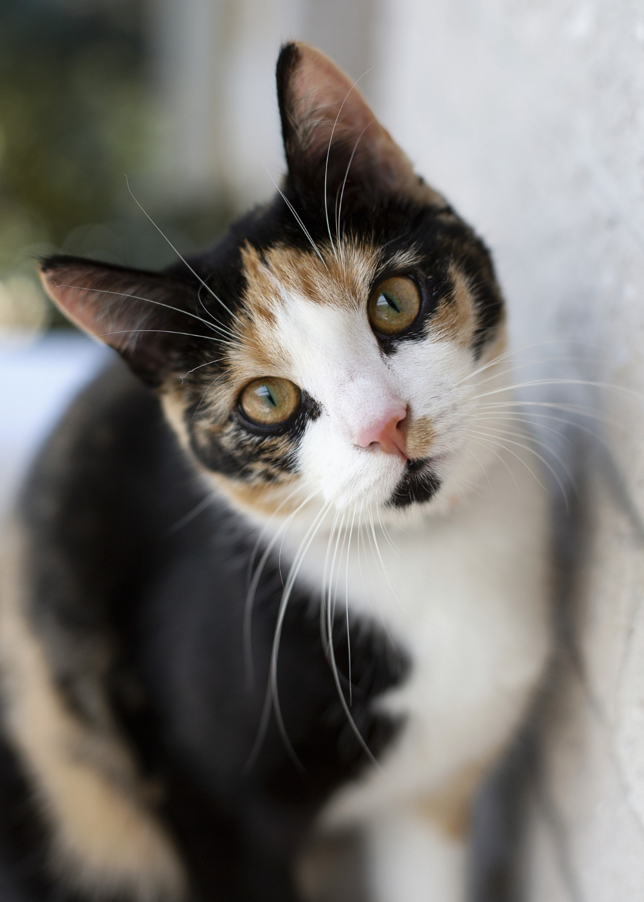

Gato siamês

SRD (Sem Raça Definida)
Padrão de Cor: Cálico (tricolor).
Curiosidade: Quase todos os gatos tricolores são fêmeas, pois o gene que determina as cores preto e laranja está ligado ao cromossomo X!